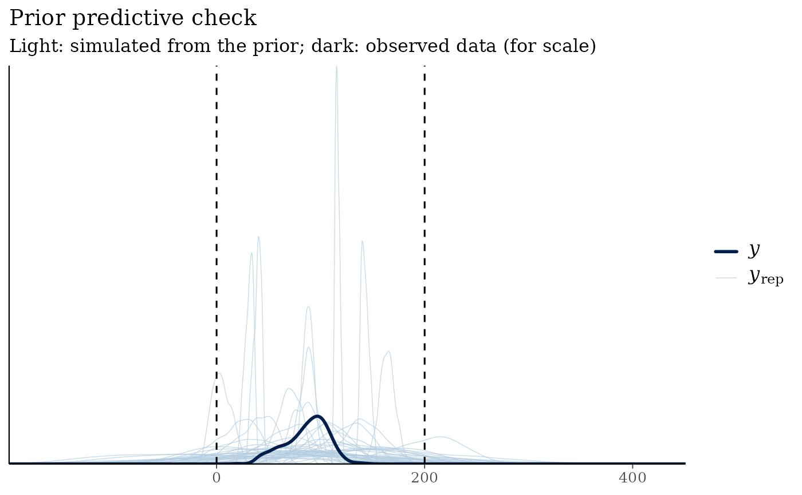

Simulates outcomes from the prior predictive distribution, i.e. data the
model considers plausible before seeing the observed outcomes, by
fitting the model with prior_PD = TRUE (the likelihood is ignored).
Comparing these simulations with what is substantively plausible is the
recommended way to check that priors encode sensible assumptions (Gabry
et al., 2019; Gelman et al., 2020).
Usage
prior_predictive_check(
data,
formula,
family = gaussian(),
prior_config = NULL,
ndraws = 200,
plausible_range = NULL,
chains = 2,
iter = 1000,
seed = 1234,
...
)Arguments
- data
A data frame containing all variables in
formula.- formula
A model formula, e.g.
y ~ x1 + x2.- family
A family object, family function or family name:
gaussian,binomial,poisson,Gamma,inverse.gaussianorneg_binomial_2.- prior_config
Priors as a
prior_config()object, the output ofempirical_bayes_priors(), a bmbeR 1.x list withinterceptandslopeelements, orNULLfor rstanarm's defaults.- ndraws
Number of prior predictive data sets to keep.
- plausible_range
Optional numeric vector
c(lower, upper)giving the range of outcome values you consider possible. The share of simulated values outside it is reported.- chains, iter
MCMC settings for sampling from the prior (defaults are smaller than for posterior fitting because the prior is simple).
- seed
Random seed passed to Stan, for reproducibility.
- ...
Further arguments passed to
rstanarm::stan_glm().
Value
An object of class bmb_prior_check with elements yrep (a
draws x observations matrix), y (the observed outcome, for scale),
summary (a list of summary statistics), fit (the prior-only model)
and binary. Has print() and plot() methods.
Details
For binomial models the check reports the share of prior predictive success probabilities that are extreme (below 5% or above 95%). Wide "non-informative" priors on the logit scale put most of their mass on such extremes, i.e. they claim outcomes are nearly deterministic, which is rarely intended (Gelman et al., 2020).
References
Gabry, J., Simpson, D., Vehtari, A., Betancourt, M., & Gelman, A. (2019). Visualization in Bayesian workflow. Journal of the Royal Statistical Society: Series A, 182(2), 389–402. doi:10.1111/rssa.12378
Gelman, A., Vehtari, A., Simpson, D., et al. (2020). Bayesian workflow. arXiv:2011.01808.
Examples
# \donttest{
data(kidiq, package = "rstanarm")
pc <- prior_predictive_check(kidiq, kid_score ~ mom_iq,
plausible_range = c(0, 200), refresh = 0)
pc
#> <bmb_prior_check> 200 simulated data sets of 434 observations (gaussian family)
#> Observed outcome range : [20, 144]
#> Prior predictive quantiles : 1%: -87.36 | 5%: -30.15 | 50%: 90.99 | 95%: 209.1 | 99%: 271.9
#> Mean of simulated data (5%, 50%, 95%): 14.26, 94.61, 156.8
#> Share of simulated values outside plausible range [0, 200]: 16.8%
#> ! More than 5% of prior predictive values are implausible: consider tighter
#> or better-located priors.
plot(pc)

# }